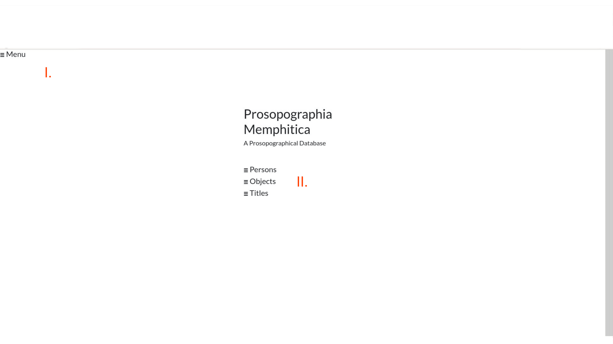
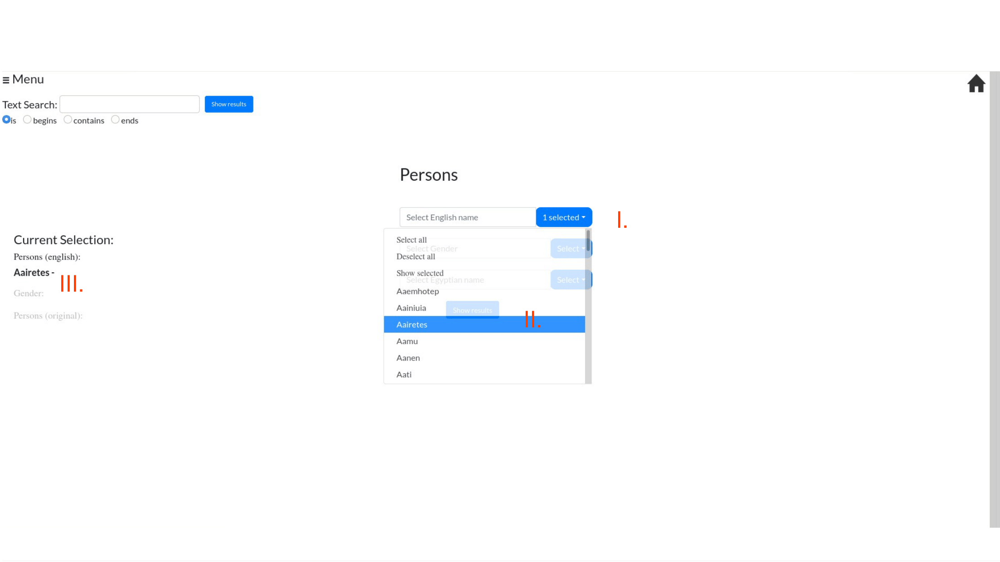
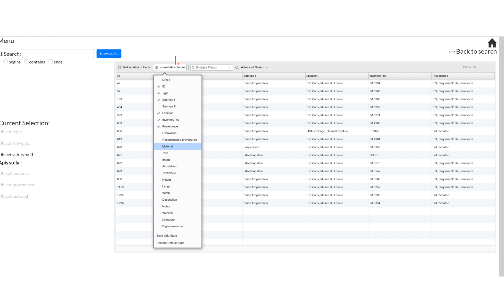

How to Use
Home
I. Click on Menu shows a list of available links
II. Three main categories are available (Persons, Objects & Titles)

Menu
I. E.g. Networks holds sub-categories concerning the visualization of different scenarios --> II.

Category (Persons, Objects, Titles)
Text field search
I. Text field search allows all types of search (is, begins, contains, ends)
II. Click Show results in order to get the results of your selection
III. Show results yields a table with the selection result
IV. Clicking on table row yields a single view of the object (see Single view)
V. In order to apply new selections click Back to search

Dropdown Menu
I. Click any button to start a search for a single sub-category (e.g. english name of person)
II. Select a person
III. The selected person is shown on the left-hand side

Table
I. Usally, the table contains more information as shown in default view
Single view
I. Click through a list of single views fulfilling choosen search parameter
II. Navigate via click menu (or srolling)